Методичка
Перед началом занятий с ребенком, следует определить готов ли ваш малыш к ним. Есть некоторые методы, которые помогают это установить:
-
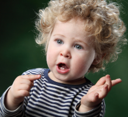А. Ребенок перестает путать слоги (ба-па, да-та, жа-за и т.д.).
-
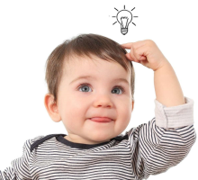Б. Начинает строить четкие и логически правильные по смыслу предложения.
-
В. Различает свойства предметов (красный, синий, сладкий, горячий) и действий (направо налево вперед-назад).
Не стоит сразу приступать к занятиям. Попробуйте подтолкнуть ребенка к этому. Например, положите где-нибудь на видном месте книжку, но сами не указывайте на нее. Пусть он сам ее найдет и природное любопытство сделает за вас часть работы. Ребенок нашел книжку и спрашивает, что это? Вперед вы готовы!
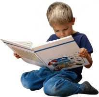
-
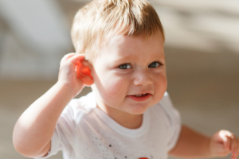1. Прочитайте стишок спросите ребенка все ли он понял. Объясните ребенка все незнакомые для него слова. Проверьте все ли слова ему теперь понятны. Прочитайте еще раз.
-
2. Начните с легких и понятных ребенку стишков. Не начинайте сразу с длинных стишков. Пробуйте для разминки на 2 рифмах потом наращивайте до 3-4.
-
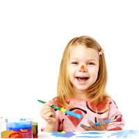3. Старайтесь всегда визуализировать стишок, указывая на что-то в повседневной жизни и прикладывайте иллюстрацию к стишку. Порисуйте стишок с ребенком
-
4. Никогда не читайте стишок быстро и без интонации. Малышу будет гораздо проще понять смысл стишка по вашей интонации. Выразительно и с эмоциями прочитанный стишок всегда легче к восприятию.
-
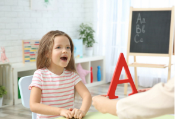5. Если ребенку трудно произносить стишок в рифме. Пусть сначала повторит его своими словами в прозе.
-
6. Попробуйте поставить маленькую сценку по стишку. Вашему чаду, да и всем домочадцам будет очень интересно и весело поучаствовать в этом.

-
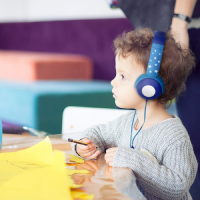7. Запишите ребенка на диктофон и дайте прослушать. Ему будет очень любопытно. Возможно, что он будет записывать и Вас.
-
8. Распечатайте весь стих в крупном шрифте на принтере. Разрежьте его по строкам и прочитайте каждую вырезанную строку. Дайте ребенку попробовать сложить его. Возможно у вас выйдет даже что-то новое.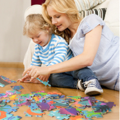
-
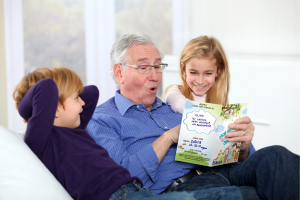9. У вас намечается праздник? Новый год, 8 марта, день рождения дедушки на носу? Воспользуйтесь моментом и предложите выучить стишок как подарок.
-
10. Не нагружайте ребенка одними и теми же упражнениями постоянно. Чередуйте их с другими занятиями. Например, с ездой на велосипеде или просто прогулками. В общем делайте перерывы на другую деятельность.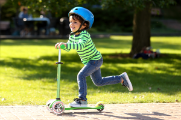
-
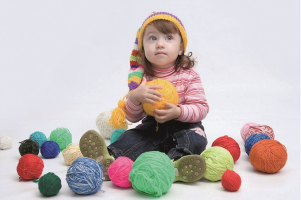11. Попробуйте совмещать заучивание с действием. Например, с наматыванием клубка, при прочтении каждой строки один виток мотка разматываете, а при произношении наоборот заматываете. Можно также попробовать шаги, одежду и т.д.
Ни в коем случае не наказывайте вашего ребенка. У каждого ребенка свой объём памяти, кому-то легко выучить целую страницу сразу, а кому-то тяжело и первое слово произнести. Все детишки разные, но стараются одинаково. Упорство, похвала и поддержка — вот залог вашего успеха!
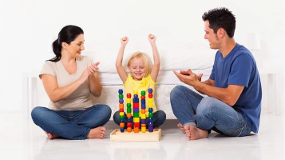